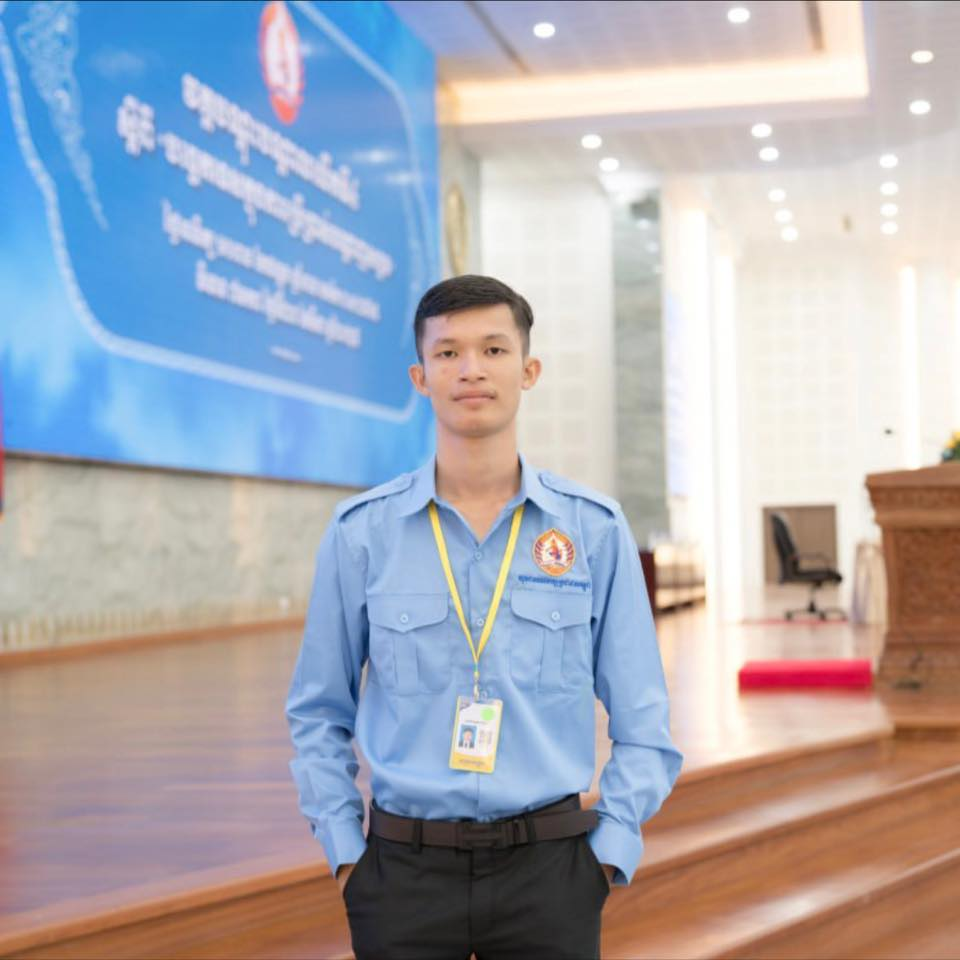

Hello! I’m an IT Supporter at the General Department of National Treasury. I specialize in maintaining network systems, software installation, and providing tech support. Passionate about technology, web development, and cybersecurity.
Location: No.283G, Street N/A, Toul Thanan, Sangkat Toul Sangke 2, Khan Russeykeo, Phnom Penh, Cambodia